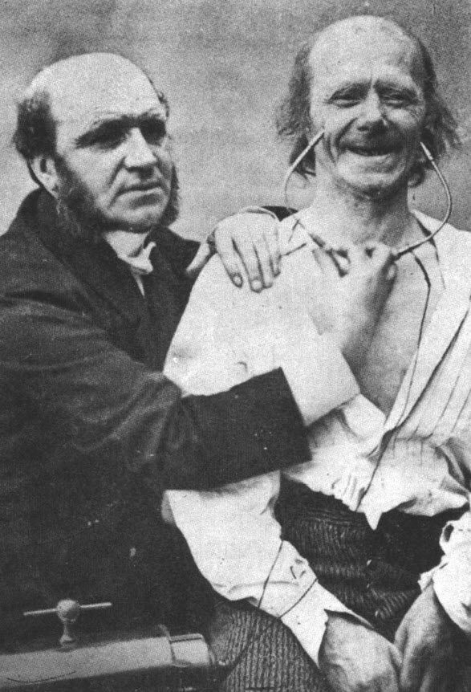
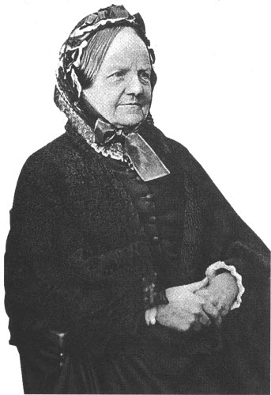

第13章
人类的特殊表情——自己注意、羞惭、害羞、谦虚：脸红
·Self-attention，Shame，Shyness，Modesty：Blushing·
在所有各种情况里，不管脸红由于害羞而发生，或者由于真正有罪的羞惭而发生，或者由于违背礼节规则的羞惭而发生，或者由于自卑的谦虚而发生，或者由于粗鲁的谦虚而发生，都是根据于同样的原理；这种原理就是对于别人的意见发生一种敏感的注意，尤其是对于别人的轻视有这种注意；这首先是有关我们自己的外貌，特别是我们自己的面部；其次则由于联合和习惯的力量，而且有关別人对我们的行为的意见。

杜庆博士在研究人类的表情。达尔文说：“当我第一次观看杜庆博士的照片，同时阅读他的说明书，并且因此知道了他们所应该表明什么意义的时候，我就对大部分照片的真实性产生极大的困惑。”
脸红的性质——遗传——身体上的最易受到脸红影响的部分——各种人种的脸红情形——和脸红同时发生的姿态——精神困惑——脸红的原因——自己注意是脸红的基本要素——害羞——羞渐是由于违背了道德律和沿用礼节而发生的——谦虚——脸红的理论——摘要
脸红（blushing）是一切表情当中最特殊而且最具有人类性的表情。猿类由于激情而脸红；可是，要使我们相信任何动物都会脸红，那就需要大量证据才行。脸红所引起的面部变红，是由于小动脉的肌肉鞘宽弛，因此在微血管里就充满了血液；而这种宽弛情形又由于相当的血管运动中枢受到影响而发生。如果同时发生很大的精神兴奋，那么显然无疑一般的血液循环就会受到影响；可是，在羞惭的感觉下，那个布满在面部上的微血管网就开始充满过多的血液；这种情形并不是由于心脏的动作而发生。我们可以用搔痒皮肤的方法来引起笑声，用敲打的方法来引起哭泣和皱眉，并且由于恐惧和苦痛而发抖等等；可是，我们却不能够像白尔格斯博士所说， (1) 用任何物理方法，就是用任何对于身体的影响，来引起脸红。只有去对脑子（精神）起影响，方才能够达到这一点。脸红不仅是不随意的，而且如果想要去抑制它，那么这反而由于引起了自己注意而确实会加强脸红的倾向。
青年人要比老年人更加自由地发生脸红，但是在婴孩时期里则不这样； (2) 这种情形值得使人注意，因为我们知道，年龄极幼小的婴孩由于激情而脸红起来。我曾经获得一些确实的报道如下：有两个女孩，在2～3岁的年龄时候发生脸红；还有一个感觉敏锐的小孩，比这两个女孩的年纪大一岁，在犯了错误而受到责备时候发生脸红。很多年纪比他们稍大的小孩都显著地发生脸红。我以为，婴孩的精神能力，还没有发达到足够容许他们脸红的程度。因此，白痴也由于这个原因而很少发生脸红。克拉伊顿·勃郎博士替我观察了那些受到他管理的白痴；虽然他曾经看到，在把食物放置到这些白痴面前的时候，他们的面部显然由于快乐而闪现红色，而且有时也由于愤怒而发生这种情形，但是从来没有看到真正的脸红（忸怩）。可是，也有一些白痴在没有达到完全痴呆的程度时候，能够发生脸红。例如有一个小头症白痴，他的年纪是13岁；根据皮恩（Behn）博士的叙述， (3) 在这个白痴发生愉快或者喜悦的时候，他的双眼略微发亮；在把他的衣服脱下以便检查身体的时候，他就脸红而把自己身子转向一侧。
妇女比男人更加容易脸红。很少看到年老的男人脸红；可是在年老的妇女方面，却相反地发生脸红的次数并不少。瞎子也照样会发生脸红。拉乌拉·勃烈奇孟在生下来时候就是瞎子，而且也是聋子，但是她也会脸红。 (4) 乌斯特大学（Worcester College）的校长勃莱尔牧师告诉我说，当时在盲哑院里的7～8个瞎子当中，有3个天生是瞎眼的小孩最容易发生脸红。瞎子起初并没有意识到他们在被人观察这件事；根据勃莱尔先生所告诉我的话可以知道，把这种知识深印到他们的头脑里去，这就是他们的教育的最重要部分；这样得到的印象，由于增强自己注意的习惯，而大大加强了脸红的倾向。
脸红的倾向是遗传而来的。白尔格斯博士举出了一个事例说， (5) 有一家人家，是由父亲、母亲和十个孩子所组成；他们全体毫无例外地都具有脸红到极苦痛程度的倾向。后来孩子成长起来；“为了消除这种病态的敏感性起见，他们当中就有几个被派遣出去旅行，但是结果仍旧毫无成效”。甚至是脸红的特征也好像会被遗传下去。詹姆士·彼哲特爵士在检查一个女孩的脊椎时候，突然看到这个女孩发生脸红的奇特状态：最初在她的一个面颊上出现一个大红斑，此后又在她的面部和颈部上出现其他杂乱分布的红斑。后来，他就去询问这个女孩的母亲，是不是她的女儿时常这样奇特地脸红；她就回答说：“是的，她也像我一样”。当时彼哲特爵士看出，他已经由于询问这个问题而使女孩的母亲脸红起来，而她正也像她的女儿一样表现出同样的特征来。
在大多数的脸红情形里，只有面部、双耳和颈部发红；可是有很多人在发生激烈的脸红时候，就感觉到全身发热和刺痛；这就证明全身表面一定受到几分影响。据说，有时脸红是从前额上开始出现，但是更加普遍的是从双颊上开始出现，以后再扩展到双耳和颈部。 (6) 白尔格斯博士曾经研究过两个色素缺乏症（皮肤毛发变白症）的患者；这两个病人的脸红开始在双颊的耳下腺神经丛上面显现出一个有明显周界的小红斑，后来增大成为圆圈；在这个发红的圆圈和颈部的红色之间，显现出一条明显的境界来；不过它们双方都是同时产生出来的。色素缺乏症患者的眼睛网膜自然是红色的，但是在脸红的时候也经常不变地增加着它的红色程度。 (7) 每个人一定已经注意到，在面部上一次出现脸红以后，就接着有几次新的脸红彼此互相追逐地出现。在脸红以前，皮肤上具有一种特殊的感觉。根据白尔格斯博士的说法，通常皮肤在发红以后，接着就显出轻度的苍白色；这就表明出微血管在扩大以后发生收缩。也有一些稀有的情形，就是在那些会自然诱发脸红的条件下，反而会发生脸色苍白的情形，而不是脸红。例如，有一个青年妇女告诉我说，有一次在盛大而拥挤的宴会里，她的头发被牢牢地缠住在一个走过的仆人的衣服纽扣上，因此费了一些时间才把它解除开来；她从自己的感觉上以为，她的脸色一定已经涨得通红，但是据当场的一个朋友肯定说，她的脸色反而变得极度苍白。
我很想知道，在脸红时候，红色究竟可以向下扩展到身体的哪个部位；彼哲特爵士由于职务关系，经常有机会去观察这方面的情形，所以他就亲切地替我在两三年的期间里去注意这一点。他看出，有些妇女在脸红时候，面部、双耳和颈背上的皮肤激烈变红，但是她们的红色一般不再沿着身体向下扩展开来。他极少看到它向下扩展到锁骨和肩胛骨处；而且他从来一次也没有看到它会向下扩展到上胸部分以下。他还注意到，有时脸红的红色从上向下消失，并不是逐渐地不可觉察地消失，却是变成不规则的红色斑点而消灭。朗斯塔夫博士也曾经替我观察了几个妇女；在她们脸红而使面部涨得通红的时候，她们的身体却一点也不发红。有些精神病患者显得特别容易发生脸红；克拉伊顿·勃郎博士曾经几次观察到，他们在脸红时候发生的红色向下扩展到锁骨处为止，而有两个病人的红色则扩展到胸部处。他提供出一个已婚的妇女的事例给我；这个妇女的年纪是27岁，她患生癫痫病（羊头疯）。在她到精神病院以后的第二天早晨，勃郎博士带领了他的助手们一同去诊视她；当时她正卧在病床上。正当勃郎博士走近到她那里的时候，她就脸红起来，双颊和太阳穴都涨得通红，接着这种红色迅速传布到双耳上去。她显得非常激奋和颤抖。当时勃郎博士为了检查她的肺部状态，而解开她的衬衫的纽扣；于是看到，鲜艳的红色扩展到了她的胸部，在每个乳房的上部三分之一处，形成一条弓形线，并且向下延长到双乳中间，差不多达到胸骨的剑状软骨为止。这个事例是很有趣味的，因为只有在病人注意到自己身体的这个部分而因此使脸红更加激烈起来的时候，它方才会向下扩展到这个范围。医生对她作进一步检查的时候，她就恢复平静状态，脸红也随着消失；不过以后还有几次，也观察到同样的现象。
前面所讲到的事实表明出，英国妇女的脸红，通常并不向下扩展到颈部以下和上胸部分。可是，彼哲特爵士告诉我说，他最近听到一个可以使他十分相信的事例，就是：有一个小女孩，由于看到一件事情而使她想象到一种不合礼貌的动作，因此激动得脸红起来，连腹部和双腿的上部全都发红。莫罗也根据一位著名画家的可靠消息而写道， (8) 有一个女郎，不得已答允充当裸体画用的模特儿，当她的身上的衣服初次被解脱下来的时候，她的胸部、双肩、双臂和全身都发红起来。
使人感到很有趣味的问题，就是：为什么在大多数的脸红情况下，只有面部和邻近的皮肤部分经常裸露出来，受到空气、光线和气温变化的影响，因此小动脉不仅获得了一种容易扩大和收缩的习惯，而且也显然已经变得比身体的其余部分表面上的小动脉特别发达。 (9) 莫罗先生和白尔格斯博士在下面所说的情形，很可能也由于同样的原因而发生；就是：在各种不同的情况下，例如在热病发作、普通的炎热、激烈的努力、愤怒、轻微的敲打等情况下，面部就很容易发红；从另一方面看来，由于寒冷和恐惧，脸色容易变得苍白；还有在怀孕期间里，妇女的面部会变得没有血色。面部也特别容易受到皮肤病——痘疮、丹毒等——的影响。下面的事实也同样支持着这种见解，就是：有些种族的土人惯常差不多赤身裸体地走路，所以他们的双臂、胸部、甚至向下到腰部都时常会因为脸红而发红。有一个很容易脸红的妇女告诉克拉伊顿·勃郎博士说，当她感到羞惭的时候，或者激奋的时候，她的面部、颈部、手腕和手掌都会发红； (10) 就是说，她的所有外露的皮肤部分都发红起来。虽然这样，还可以使人怀疑，面部和颈部皮肤经常裸露，这种情形在所有各种刺激物的影响下所引起的皮肤的反应力，究竟能不能去充分说明英国妇女的这些裸露的皮肤部分要比其他国家的妇女具有更加容易发红的倾向；要知道，在双手上也分布着很多神经和小血管，也像面部或者颈部一样经常暴露在空气里，可是双手却很少发红。我们马上就可以看到，显然这个事实的充分解释就是：我们的头脑朝向面部的注意，要比朝向身体的任何其他部分的注意，更加频繁，而且也更加集中。
各种人种的脸红情形——在差不多一切人种当中，甚至是在那些皮肤十分黯黑而不能使人觉察到它的颜色变化的人种当中，他们的面部的小血管，都会由于受到羞惭情绪的影响而被血液所充满。欧洲的所有亚利安派种族，还有印度的相当范围的种族，都显著地表现出脸红来。可是爱尔斯金先生却说，他从来没有看到印度人的颈部显著地发红起来。至于说到锡金的列普查人方面，那么斯各特先生时常观察到，他们的双颊、耳根和颈部两侧显出淡红色来，同时双眼向下和头部低垂。这种现象就发生在斯各特先生觉察到他们有欺骗行为或者责备他们忘恩负义的时候。因为这些人的面部颜色苍白而带有淡黄色，所以在脸红的时候，他们的面部就比印度的多数其他种族的土人的面部显现出更加显著的红色来。根据斯各特先生所说，在印度的这些其他种族的土人发生羞惭或者带有一部分恐惧的羞渐时候，无论他们的皮肤颜色发生怎样的变化，都远不及下面的动作那样明显，这就是：头部转开或者下垂，同时双眼向两侧转动或者斜视。
塞姆派种族因为和亚利安派种族有一般的类似，所以正像我们可能预料到的那样，也自由地发生脸红。例如关于其中的犹太人方面，在《耶利美亚书》（Book of Jeremiah ，第4章，第15节）里讲说道：“不对，他们丝毫也感不到羞惭，甚至也不会脸红”。 (11) 阿沙·格莱夫人曾经看到，有一个阿拉伯人在尼罗河上划船，他的操纵技术很拙劣，因此他在受到同伴们的嘲笑时候，“他脸红起来，一直到颈背都发红”。达夫·戈登夫人指出说，有一个年青的阿拉伯人，在走到她的面前时候脸红起来。 (12)
斯文和先生曾经看到中国人脸红，但是认为这是稀有的现象； (13) 可是，中国人有一种“羞惭得脸红”的说法。吉契先生告诉我说，移住在马来半岛的中国人和这个半岛内地的马来土人都会脸红。在他们当中，有些人差不多赤身裸体地走路；吉契先生特别注意到，在这些人脸红的时候，红色就沿着身体向下扩展。除去单单看到面部发红的这些事例以外，吉契先生观察到，有一个年纪24岁的中国男子，在他由于羞渐而脸红的时候，他的面部、双臂和胸部都发红；还有一个中国人，在盘问他为什么不好好地干工作的时候，他的全身就同样地发红起来。他看到两个马来人的面部、颈部、胸部和双臂发红； (14) 还有一个马来人（布基族人），脸红的颜色向下扩展到了他的腰间。
波利尼西亚人（Polynesians）也自由地脸红。牧师斯塔克先生曾经看到了几百个新西兰人的脸红情形。下面一个事例值得提出来谈谈，就是关于一个老年土人的脸红情形；这个人具有异常暗黑的皮肤，并且在一部分身体上刺绘了花纹。这个老年土人曾经把自己的土地租借给一个英国人以后，就发生一个强烈的欲望，想要去购买一辆双轮单马车；当时在毛利人中间正流行着使用这种马车的风气。因此，他就想向自己的租户预先收取四年地租，并且去和斯塔克先生商量，他是不是可以这样办。这个土人年老、笨拙、贫困而且穿着破烂的衣服，因此他这种为了虚荣而想亲自驾坐在自购的马车里出游的想法，使斯塔克先生感到有趣，甚至抑制不住自己而发笑起来，而同时“这个老年土人就脸红一直到头发根里”。福斯脱（J. R. Forster）说道，在大赫的岛的最美丽的妇女的双颊上，“你可以容易辨认出一种扩展开来的红色” (15) 。同样也可以看到，太平洋里的其他几个群岛上的土人发生脸红。
华盛顿·马太先生时常看到，在那些属于北美洲各种未开化的印第安种族的青年女子的面部上，显现出红色来。根据勃烈奇斯先生的报道，在美洲大陆的相反的一个终端处，就是在火地岛上，土人们“脸红得很厉害，但是主要是在妇女方面有这种现象；可是，他们的确也因为自己个人的外貌受人注意而发生脸红”。这种因为外貌受人注意而脸红的现象，相符于我所回想到的火地岛人琴米·白登（Jemmy Button）的情形，就是：琴米·白登（曾经在贝格尔舰上）很注重于擦亮自己所穿的皮靴，并且总是竭力打扮自己；当旁人对他这种怪癖作戏笑的时候，他就脸红起来。至于说到玻利维亚的很高的台地上的爱马拉族（Aymara）的印第安人方面，那么福尔勒斯先生说道， (16) 从他们的皮肤颜色方面说来，他们的脸红情形就不可能像白种人方面那样清楚地显现出来；可是在那些会使我们发生脸红的情况下，仍旧“时常可以看到他们发生那种和我们同样的谦虚或者困惑的表情来；甚至在黑暗里，也正像欧洲人方面所发生的情形一样，可以感觉到他们面部皮肤的温度上升”。那些居住在南美洲的炎热、气候不变和潮湿地区的印第安人的皮肤，显然并不像其他居住在大陆南北两部分的、长期暴露在气候变化极大的地区里的土人的皮肤那样容易对精神兴奋发生反应，因为洪保德曾经无条件地引用西班牙人的冷笑说：“怎样可以去相信一个不懂得脸红的人呢？” (17) 冯·斯比克斯（Von Spix）和马尔丘斯（Martius）在谈到巴西的土人时候肯定说，不能够认为他们真正会脸红；“在印度人方面，只有在他们和白种人长久来往以后，并且在接受了一些教育以后，我们方才能够看出印度人的精神情绪在脸色变化方面的表现”。 (18) 可是，很难使人相信脸红的能力会这样发生出来，不过他们由于教育和新的生活方式而形成自己注意的习惯，应当会增强脸红的天生的倾向。
有几个可靠的观察者向我肯定说，他们曾经看到，在黑人的面部上，虽然他们的皮肤黑得像黑檀木一样，但是在那些会激发起我们脸红的情况里，也显出一种好像脸红的外貌来。有几个人叙述说，黑人在这时候脸色发出褐色来；可是，多数人则说，他们面部的黑色程度变得更加深暗些。血液充进皮肤的数量增加情形，显然也有几分使皮肤的黑色程度增强；例如，有一些和痘疹并发的病症，会引起黑人的患生部分显得更加黑些，却不像我们方面那样变得更加红些。 (19) 皮肤大概由于微血管充血而变得更加紧张，所以它会反映出一种和以前略微不同的色泽来。我们可以确信地说，黑人面部的微血管被血液所充满起来，因为布丰曾经记述道， (20) 有一个黑人妇女患生十分特殊的色素缺乏症；当她把自己身体裸露出来给大家观看的时候，她的双颊就显出一片淡红色来。黑人皮肤上的斑痕长期显现出白色来；白尔格斯博士经常有机会去观察一个黑人妇女的面部上的这种斑痕，所以就清楚地看到，这个斑痕“每次在突然有人向她说话的时候，或者在她因为任何细小过失而受到叱责的时候，总是会变成红色” (21) 。可以看到，在她发生脸红时候，红色先从斑痕的周界处出现，再向中间进展，但是并不达到斑痕的中心。根据这些事实，可以确实无疑地说，虽然看不出黑人皮肤上显现出红色来，但是他们仍旧会发生脸红的现象。
盖卡和巴尔般夫人向我肯定说，南非洲的卡弗尔人从来不脸红；可是，这一点可能只是指他们的脸色变化不能被人辨别清楚。盖卡还补充说，在那些会使欧洲人发生脸红的情况下，他的同乡人就“好像因为羞惭而把头部向上举起”。
在我的报告人当中，有四个人肯定说，澳大利亚人差不多也像黑人一样，从来不脸红。第五个关于澳大利亚方面的报告人回答我的问题说有可疑的地方，并且指出说，由于他们的皮肤污黑，只有最强烈的脸红方才会被辨认出来。有三个观察者则肯定说，澳大利亚人会发生脸红； (22) 威尔孙先生还补充说，只有在强烈的情绪下，还有在皮肤由于长期暴露和污秽不洁而还不太暗黑的时候，才可以看出他们的脸红现象来。拉恩先生回答说：“我曾经注意到，羞惭差不多时常激发起脸红来，而脸红又时常向下扩展到颈部为止”。他又补充说，他们还“用双眼向左右转动”来表示羞惭。因为拉恩先生是土人学校里的教师，所以很可能他主要观察了小孩方面；我们也已经知道，小孩要比成年人更加容易脸红。塔普林先生曾经看到混血种人发生脸红，并且他又说道，土人有表示羞惭的用语。哈格纳乌尔先生就是从来没有观察到澳大利亚人脸红的人之一；他说道，他曾经“看到，他们因为羞惭而低头向下看”；还有传教士巴尔满先生指出说，虽然“我在成年的土人当中还不能够辨别出任何类似羞惭的表情来，但是我曾经看出，在土人的小孩发生羞惭的时候，他们的双眼显出一种不安定的、含有泪水的外貌，好像他们不知道要向什么地方瞧看才好似的”。
上面所举出的事实已经足够表明出，不论脸红是不是会引起怎样的颜色变化来，它总是多数的人种所共有的，说不定是一切人种所共有的。
和脸红同时发生的动作或者姿态——我们在强烈的羞惭感觉之下，就产生出一种要想躲藏（遮羞）的欲望来。 (23) 这时候我们就把全身转开，特别是把面部转开，总是设法要把面部遮掩几分。一个羞惭的人很难忍受得住当面的人的凝视的目光，因此他差不多总是不变地把双眼向下看，或者斜视。因为通常同时发生一种要避免羞惭显露的强烈欲望，所以甚至是打算要使双眼直接朝对那个引起他羞惭的人瞧看，也不能成功；这两种反对倾向之间的对抗作用，就引起双眼作各种各样不安定的动作。我曾经注意到两个很容易脸红的妇女；她们在脸红的时候，就具有这种显然是由于习惯而获得的怪癖，就是她们的眼睑特别急速地不断霎动着。有时在发生激烈的脸红时候，也略微渗出眼泪来； (24) 我以为，这种情形是由于泪腺也同时获得了更多的血液供应量；我们可以知道，当时血液向邻近各器官（连眼睛的网膜也包括在内）的微血管里大量充入。
很多古今的作家都注意到上面所说的这些动作；前面我们也已经看到，世界各地的土人在发生羞惭的时候，时常表现出双眼朝下看或者斜视，或者双眼作着各种不安定的动作。伊士拉（Ezra，公元前六世纪的预言家）大声喊叫道（《旧约圣经》，伊士拉篇，第9章，第6节）：“我的上帝啊，我羞惭，我羞惭，我脸红， (25) 不敢把我的面部仰起来看您，我的上帝。”在伊赛亚篇（《旧约圣经》，第50章，第6节）里，我可以看到下面一句话：“我不羞惭，所以用不到遮掩我的面孔。”辛尼加（Seneca，罗马斯托伊克派哲学家，公元前4年—公元65年）指出说（《书信集》，“Epist. ”，第11卷，第6封信）：“罗马的戏剧演员们在扮演羞耻情形时候，把头部下垂，双眼盯视地面并且使它们保持低垂状态，但是不能够表演出脸红来。”生活在公元第五世纪的马克罗比厄斯（Macrobius，罗马文学家）曾经说道（《农神祭》，“Saturnalia ”，第7卷，第11章）：“自然哲学家们肯定说，如果羞惭使自然界激动起来，那么自然界就会把血液当作面罩来遮掩自己，正像我们所看到的，任何一个人在脸红时候，时常要把自己的双手遮掩面部的情形一样。”莎士比亚使剧中人马尔克斯（Marcus）去对他的侄女说道（《提多·安德罗尼克斯》，“Titus Andronicus ”，第2幕，第5场）：“啊！现在你羞惭得把面孔掉转开来了。”有一个妇女告诉我说，她在鲁克医院（Lock Hospital）遇见一个以前相识的女郎；这个女郎已经变成可怜的流浪者；这个可怜的人在走近她身边时候，就用床单布遮掩自己的面部；虽然劝说她，也无法使她露出面孔来。我们也时常看到，幼小的孩子在害羞或者羞惭的时候，就把面部掉转开来，但是仍旧站在原地，把自己的面孔埋藏在母亲的外衣里，或者他们很快把自己的面孔下伏在母亲的膝上。
精神困惑——在大多数人发生激烈的脸红时候，他们的精神能力也同时被扰动起来。我们可以用一些通常的用语来证明这一点，例如：“她困惑得手足失措起来。”处在这种状态的人，就失去自己原有的精神，并且发出十分奇特而不恰当的说法来。他们时常发生很大的痛苦，说话带有口吃，并且做出笨拙的动作或者奇特的怪脸来。有时还可以观察到一部分面部肌肉发生不随意的痉挛。有一个特别容易脸红的青年妇女告诉我说，她在发生这种精神困惑的时候，甚至连自己说些什么话都不知道。当时我就用猜测的方式询问她，这种状态是不是由于她意识到人家在注意她的脸红而发生的痛苦所引起的，但是她回答说，情形并不是这样，“因为有时在自己的房间里由于发生一种思想而脸红时候，也会引起这种十分笨拙的举动来”。
在这里，我来举出一个例子，说明有些感觉敏锐的人容易发生极度的精神扰乱。有一个可以使我相信的绅士向我肯定说，他曾经亲眼看到下面的情景：有一次，为了祝贺一个极容易害羞的人而举行了一个小宴会；当他起立向来客们致谢的时候，他虽然把明显地牢记在心头的演讲词背诵了一遍，但是绝对无声，完全没有发出一个字音来；可是，他扮演的动作却像自己在作着十分有劲的演说似的。他的朋友们在看出这种情形以后，就等到每次在他的演说姿态表明出暂时停顿的时候，大家对这一段想象的雄辩高声喝彩起来，同时这个演说者却始终没有发现自己在整个演说时间里完全没有发出过声音来。不但这样，他后来反而非常满意地向我的朋友说道，他非常出色地完成了演说的任务。
如果一个人感到很羞惭或者十分害羞，并且发生激烈的脸红，那么他的心脏就会迅速跳动，而且呼吸也遭到破坏。这种情形也就不能不对脑部血液循环发生影响，而且大概也对精神活动发生影响。可是，显然可以使人怀疑的是：根据愤怒和恐怖对于血液循环起有更加强烈的影响这一类来判断，我们是不是就可以这样来满意地说明人们在发生激烈的脸红时候具有困惑的精神状态呢？
显然这种情形的真正说明，就在于：在头部和面部的表面微血管的血液循环和脑部微血管的血液循环之间，存在着密切的交感作用。我曾经请求克拉伊顿·勃郎博士供给这方面的资料，于是他就提供给我各种针对这个问题的事实。如果把交感神经从头部的一侧切断，那么这一侧的微血管就宽弛起来，被血液所充满，因此皮肤变红，发起热来，同时这同一侧的头骨内部的温度也升高起来。由于脑膜发炎，这就引起面部、双耳和双眼过度充血。显然可知，癫痫发作的第一阶段就是脑部血管的收缩；而它的第一次外露的特征就是脸色变得极度苍白。头部的丹毒症普遍引起谵语。我以为，甚至是用强烈的洗涤液刺激皮肤的方法来减轻严重的头痛这种手术，也是根据这同样的原理而来的。
勃郎博士曾经时常用亚硝酸戊脂的蒸气去医治病人； (26) 这种蒸气具有一种特性，就是能够在30～60秒的时间里引起病人脸色变得鲜红。这种发红现象在几乎所有细节方面都和原来自身发生的脸红相像 (27) ；它从面部上的几个不同的部位开始出现，接着就扩展开来，直到头部、颈部和前胸部分的全部表面都变得通红为止；可是，曾经也观察到，这种红色只有在一个病人身上，才能够扩展到腹部。眼睛网膜里的血管也扩大起来；双眼发出闪光；还有在一个事例里，略微有眼泪渗出。这些病人起初发生愉快的兴奋；可是，随着面部发红范围的扩大，他们就变得困惑和手足失措起来。有一个时常受到这种蒸气处理的妇女肯定说，每次当她发热的时候，她的头脑就模糊不清。如果根据那些刚才开始脸红的人的眼睛发亮和举动活泼的情形来判断，那么显然他们的精神能力略微被激奋起来。只有在脸红过度的时候，精神才发生困惑。因此，可以认为，不论在吸进亚硝酸戊脂的蒸气时候或者在自然的脸红时候，总是在精神能力所依存的脑子部分受到影响以前，面部的微血管已经受到了影响。
相反地说来，如果脑子最初受到影响，那么皮肤微血管的血液循环就接着受到影响。勃郎博士曾告诉我说，他曾经观察到，在癫痫病患者的胸部上，分布着红色疱疹和斑点。如果在这些情形里，用铅笔或者其他物体去轻微地摩擦胸部或者腹部的皮肤，或者在更加显著的情形里，单单用手指去触动皮肤，那么不到半分钟的时间里，这个受到摩擦或触动的表面就显露出鲜红色斑纹来，接着这种红斑就从接触点两侧扩大开来，到相当大的距离处，并且连续发红有几分钟的时间。这些红斑叫做特罗梭脑斑（cerebral maculae of Troussean）；据勃郎博士所说，它们表示出皮肤血管系统状况极度恶化。因此，如果说在我们精神能力所依存的脑子部分的微血管血液循环和面部皮肤的微血管血液循环中间，存在着密切的交感作用（这一点是不能怀疑的），那么也就用不到惊奇，这些诱发出激烈的脸红来的精神原因，一定也会引起强烈的精神困惑，而不和它们本身所引起的扰乱影响发生关系。
引起脸红的精神状态的性质——这里所说的精神状态就是害羞、羞惭和谦虚；而所有这些精神状态的主要的要素则是自己注意（self-attensin，自觉）。可以举出很多理由来使人相信，这些精神状态的最初的激发原因，正就是这种由于别人的意见而对自己外貌所发生的自己注意；后来，另一种由于道德行为而发生的自己注意，也就由于联合的力量，而产生出同样的效果来。激发脸红的原因，并不是在于我们对自己外貌作了简单的考虑，而是在于想到了别人对我们的想法。在绝对孤僻的地方，即使感觉最敏锐的人，也恐怕会对自己的外貌完全漠不关心。我们对于斥责和反对的感觉，要比对于赞成的感觉更加敏锐；因此，无论对我们的外貌或者对我们的行为提出轻视的意见，或者嘲笑，都会比了对它们的夸奖，更加容易引起我们脸红。可是，显然无疑，夸奖和赞叹也对引起脸红方面极有效果；例如有一个美貌的女郎，在一个男子对她仔细凝视的时候，虽然她可能十分清楚地知道，那个男人并不是轻视她，但是她仍旧脸红起来。有很多小孩，也像年纪大的、感觉敏锐的人一样，在受到别人很大的夸奖时候，就脸红起来。下面我们就来考察这样一个问题；就是：那种以为别人在注意我们自己的外貌的意识，怎样会立刻引起微血管，特别是面部的微血管，被血液充满起来。
现在我来提出一些原因，根据它们便会使人相信，在获得脸红习惯方面，基本的要素是对于个人外貌的注意，而不是对于道德行为的注意。这些原因在被分开来看的时候是轻微的，但是我以为，当它们被结合在一起的时候，就有相当的重要。大家都知道，最容易使一个害羞的人脸红的原因，要算是任何一种不论怎样轻微的对他个人外貌的意见了。甚至只要去注视一个很容易脸红的妇女的衣服，就会使她满脸通红起来。科尔利奇（Coleridge）说道，要使有些人脸红，只要对他们仔细凝视就够了——“让能够办到的人来作说明吧”。 (28)
白尔格斯博士从两个色素缺乏症的病人方面观察到，“只要略微打算察看他们的特征，就总是不变地”引起他们强烈的脸红。 (29) 妇女要比男人对于自己个人的外貌更加敏感得多；尤其是年纪较大的妇女比年纪较大的男人在这方面表现得更加显著；她们更加容易自由发生脸红。青年男女要比老年男女对这方面更加敏感，而且也更加容易自由发生脸红。小孩在极幼小的年龄不脸红；而且他们也不表明出那些通常和脸红同时发生的自我意识的其他表征；这些小孩的一个主要的妙处，就在于他们一些不关心别人对他们所想的事情。在这种幼小年龄，他们会用固定的目光和不霎动的眼睛去呆看一个陌生人，好像这个陌生人是无生命的物体似的；我们年纪较大的人就模仿不出这种样子来。
大家都清楚地知道，青年男女对于彼此有关自己个人外貌的意见，有极度的敏感；他们在异性面前，要比在同性面前，发生更加难以比拟的脸红。 (30) 一个即使是不容易发生脸红的青年男子，对于女郎对他的外貌所作的任何轻微的嘲笑，也会发生激烈的脸红；可是，他恐怕不去注意到女郎对任何重大问题的断语。任何一对幸福的年青的爱人，都把彼此互相赞美和恋爱看做比世界上一切东西都高贵；大概他们在互相求爱的时候已经发生了好多次脸红了。根据勃烈奇孟先生的报道，甚至是火地岛上的未开化的人，“主要是关于妇女方面，而且的确是对于自己的个人面貌方面”，也会发生脸红。
因为在身体的一切部分当中，面部是表情的主要部位和声音的发源处，所以它也就最经常被察看和注意。同时，它又是美丽和丑陋的主要部位；全世界各地的人都是最周到地打扮自己的面部。 (31) 因此，在很多世代里，面部要比身体上的任何其他部分，成为更加密切和更加认真的自己注意的目的物；根据这里所举出的原理，我们就可以理解到为什么面部最容易发红。虽然面部和邻近各部分的皮肤暴露在空气里，受到气温变化等的影响，因而显然大大增加了这些部分的微血管的扩大和收缩能力，但是这种事实的本身还难以去说明，这些部分为什么会比身体的其余部分更加容易发红，因为它还不能够说明双手很少发红的事实。在欧洲人的面部激烈发红的时候，他们的全身也略微感到有些刺痛；有些种族的人经常差不多赤身裸体地走路，在他们脸红的时候，皮肤发红的范围要比我们更加广大。这些事实可以使人有几分理解，因为以前原始人也像现存的那些仍旧赤身裸体的种族的人一样，他们的自己注意的对象却不像现在穿衣走路的人那样专门限于自己的面部方面。
我们已经看到，在世界各地，有些人因为道德上的违背行为而感到羞惭；这时候，并不和别人对他们的个人外貌的任何想法有关，他们总是有一种倾向，要去把自己的面部向一侧转开，向下低垂或者掩藏起来。很难认为这些动作的目的是要遮掩他们的脸红，因为在那些已经消除了任何要想遮掩羞惭的欲望的情况下，例如在已经完全承认犯罪行为并且在忏悔的时候，仍旧会这样把面部向一侧转开或者遮掩起来。可是，原始人在获得道德上的很大敏感性以前，大概已经对自己的外貌有了高度的敏感，至少在对异性的外貌方面是这样；因此，如果对他们的外貌提出任何轻视的意见，那么他们大概也会感到痛苦；这也是羞惭的形式之一。还有，因为面部是身体上的最容易被人注视到的部分，所以我们可以理解到，任何一个对于自己外貌感到羞惭的人，总是会把身体的这个部分（面部）遮掩起来。因此，此后在一个人由于纯粹道德上的原因而感到羞惭的时候，这样获得的习惯，自然也就会发生出来；否则也就不容易知道，为什么正是在这些情况下会出现一种欲望，就是：想要把面部尽快掩藏起来，而不是把身体上的其他部分掩藏起来。
每个在感到羞惭的人，通常都具有一种习惯，要把自己的双眼向一侧转开，或者向下低垂，或者向左右两侧作不安定的移动；这种习惯的形成原因，大概是发生羞惭的人每次在朝向当场的人们瞥视的时候，就在自己心头发生一种信念，以为别人都在仔细注视他，因此他就努力不去瞧望这些在场的人，特别是不去瞧望这些人的眼睛，而可以暂时逃避开这种苦痛的信念。
害羞（shyness）——这种奇特的精神状态，时常被称做面愧（shamefacedness），或者假惭（false shame），或者mauvaise honte（类似的羞惭）；它显然是一切脸红原因当中的最有效的原因之一。实际上，可以主要从脸色发红方面，从双眼向一侧转开或者向下看视方面和从身体发生拙笨的神经性动作方面，来辨认出害羞。很多妇女由于这种原因而脸红的次数，要比她们由于做了任何应当受到责难的事情而感到真正羞惭的脸红次数，有一百倍或者说不定一千倍之多。害羞显然是由于我们对于别人的意见，尤其是对于外貌方面的意见（不论是善良的意见或者恶意的意见，都是一样），发生敏感的结果。陌生的人们既不知道，也没有注意到我们的行为或者性格，但是他们可能，而且时常真的会来批评我们的外貌；因此，容易害羞的人在陌生的人们面前就特别容易害羞和脸红。我们的衣服方面的任何特点或者新的式样，或者自己外表上和特别是面部上的任何细微缺点，很容易吸引陌生的人们注意；如果容易害羞的人发生了这些方面的意识，那么这就会使他害羞得难以忍受。相反地说来，如果我们所遇到情形是关于行为方面的，而不是关于个人的外貌方面的，那么我们在那些使我们认为能够提出有相当价值的批评意见来的熟识者们面前，要比在陌生人的面前，更加容易害羞。有一个外科医生告诉我说，他曾经充当私人随从医生，跟随一个青年人出外旅行；这个青年人是有钱的侯爵，在支付给他酬金时候，就像女孩子一样脸红起来；可是，要是这个青年人支付账款给商人，那么他大概就不会发生脸红和害羞了。可是，有些人很敏感，甚至是单单去对差不多任何人讲话这种动作，也足够引起自我意识，结果就发生轻微脸红。
由于我们对于反对或者嘲笑方面很敏感，所以这要比赞成更加容易引起我们害羞和脸红；不过，赞成也对一些人发生高度有效的作用。自信力很强的人很少害羞，因为他们把自己看得太高，不去顾到别人的指责。可是我们还不能完全明白，为什么骄傲的人时常害羞，实际情形也显得是这样；很可能虽然他有充分的自信心，但是在遇到别人的意见时候，即使这种意见带有鄙视的意味，他也得真正加以重视。有些极其容易害羞的人，在那些和他们十分相熟的人面前，还有在那些会发出使他们十分确信的良好意见和同情的人面前，很少发生害羞；例如，女孩在自己母亲面前就是这样。我忘了在我所印发的询问表里去提出问题说，在各种不同的人种当中是不是也可以观察到害羞的表情；可是，有一个印度绅士向爱尔斯金先生肯定说，在印度人当中，可以辨认出这种表情来。
根据有些语言里的“害羞”这个字的语源的说明， (32) 可以知道这个字是和“恐惧”（fear）有密切的关系；可是在通常的意义上，这个字却和“恐惧”有区别。一个害羞的人显然无疑会担心陌生人的注意，但是未必能够说他害怕陌生人；他很可能在作战时像英雄一般勇敢，但是在陌生人面前就会对一些琐细事情变得毫无自信。差不多每个人在第一次向群众作演说的时候，都会发生极度的神经兴奋；多数的人一生都是这样；可是，显然这种情形的发生原因，就在于他们意识到一种将要到来的重大努力［特别是一种使我们认为是异常的努力］， (33) 同时由于这种意识而发生出对身体的联合影响，却不是在于害羞； (34) 可是显然无疑，一个胆小或者容易害羞的人在这些情况下，要比其他的人发生多得无限的苦恼。至于年龄极小的孩子方面，那么我们就很难辨别出他们的恐惧和害羞之间的不同来；可是，我时常以为，大概这些孩子的害羞感情也具有一种没有驯服的走兽的野性的特征。害羞在孩子的年龄极其幼小时候就显现出来。当我的一个小孩的年纪达到2岁又3个月的时候，我看到他发生出一种确实像是害羞的表情的痕迹来，这是他在我离开家里只不过一个星期以后见了我而发生的。当时他并没有脸红，只不过把双眼略微转开了我不多几分钟，来表示了他的害羞。还有几次，我曾经注意到，在幼年的小孩还没有获得脸红能力以前，在他们的小眼睛里显现出害羞或者面愧和真正羞惭来。
因为害羞显然由于自己注意而发生，所以我们可以理解到，有些人所主张的下面的意见是多么的正确，就是：如果我们由于小孩害羞而去斥责他们，那么这种举动对他们不仅没有什么益处，反而有很大害处，因为这还会唤起他们对自己作更加密切的注意。还有一个说法也是很不错的，就是：“最会伤害小孩身心的事情，要算是用毫无慈悲的旁观者的探索眼光，去不断地考查他们的感情，察看他们的面部表情，并且评定他们的敏感性的程度。在这一类检查的约束之下，他们除了老是想着自己在被人瞧看以外，就不会去想其他的事情，而且除了老是羞惭或者忧虑以外，就不会发生其他的感觉。” (35)
道德的原因：自觉有罪——至于说到那种由于纯粹道德上的原因而发生的脸红，那么我们也可以采用以前所用的相同原理来说明，就是：这是由于注意到了别人的意见而发生的。并不是意识到犯罪就会引起脸红，因为一个人可能在孤独的时候诚心地忏悔自己所犯的某种轻微的过失，或者他也可能为了一种别人所没有觉察到的罪行而发生十分悔恨的苦痛，但是当时并不脸红。白尔格斯博士说道： (36) “我在那些责备我的人面前脸红起来。”面部变红，并不是由于我们对犯罪的威觉，而是由于我们想到了别人在想着或者知道我们的犯罪行为而发生的。一个人可能由于自己说了一些不大的谎话而自觉十分羞惭，但是并不脸红；可是，只要他一怀疑到对方已经觉察出他的说谎，那么他就会立刻脸红起来；如果当时他的对方是他所尊敬的人，那么就特别容易发生这种情形。
从另一方面看来，一个人也可能确信上帝亲眼看见他的一切行为，所以他可能深刻地意识到，自己不应当犯有某种过失，因此就去向上帝祷告，乞求宽恕；可是，有一个极容易脸红的妇女认为，这种祷告情形从来没有激起她脸红过。我以为，我们的行为被上帝知道和被别人知道这两种感觉所以不同的原因，就在于：别人对于我们的不道德行为所作的责备，在本质上有些相似于他对于我们自己的外貌的轻视，所以双方由于彼此有联系而引起了同样的结果；可是，上帝的责备却不会使我们发生这种联系的想法来。
有很多人虽然完全没有犯某种罪行，但是在有人责备他犯有这种罪行的时候，却发生起激烈的脸红来。上面刚才讲到的那个极易脸红的妇女曾经对我说，只要她一想到，别人在想着我们已经说了一种不亲切的或者愚蠢的话，即使我们始终都知道自己完全发生误解，那么这种情形也就很足够引起她发生脸红。有种行为可以受人赞扬，或者毫无这方面的性质，但是一个感觉敏锐的人，如果怀疑到别人在对他的这种行为采取不同的看法，也就会脸红起来。例如，有一妇女，在单独一个人时候，可能付钱给乞丐而毫不显现出脸红的痕迹来；可是，如果当时还有别人在一起，而且她又怀疑到他们是不是会夸奖她，或者猜测到他们以为她在夸耀自己有钱，那么她就会脸红起来。如果她提出要去拯救一个贫病无告的知识妇女的急难，特别是一个以前在家境良好时候和她相识的妇女的急难，那么她因为当时不能够确实知道，别人会对她的行为作怎样的看法，所以也同样会脸红起来。可是，这一类情形就会混合而成为害羞。
违背礼节——礼节规则时常被大家认为是各人在别人的面前、或者对于别人所应当采取的行为的规则。这些规则不用去和道德意识联系起来，而且时常是毫无意义的。虽然这样，因为它们根据于我们的同辈和前辈的固有的风俗习惯，而且他们的意见又是被我们非常尊重的，所以我们就认为这些规则也差不多像是绅士们所遵守的礼法一样，必须服从它们。因此，违背礼节规则，就是没有礼貌或者举动粗鲁，行为不检点或者说话不当，虽然这是十分偶然的情形，但是也会使一个会脸红的人发生激烈的脸红。甚至在很多年以后，当他回想到以前所做过的这类违背礼节的行动时候，他也会感到全身刺痛不安。有些人对于别人违背礼节的同感力也很强烈，例如有一个妇女向我肯定说，有一个敏感的女人，在看到完全不相识的人所作的极其违背礼节的举动时候，即使这种举动可能对她毫无关系，也有时会脸红起来。
谦虚——这也是一种激发起脸红来的强有力的因素；可是，“谦虚”（modesty）这个字的意义，包含着各种不同的精神状态。它具有自卑（humility）的意义；我们也时常可以从下面两种情形来判断这一点，就是：有些人因为受到别人轻微的夸奖而非常愉快，于是就脸红起来；还有一些人在受到夸奖时候，认为根据自己所定的低下的标准看来，这种夸奖似乎过高，因此感到局促不安而脸红起来。在这种情形下，脸红也是一种重视别人意见结果的通常表现。可是，谦虚时常也和粗鲁的举动有关，而粗鲁则是有关礼节的事情，因为我们在那些完全或者几乎赤身裸体的种族方面，就可以清楚地看到这种情形。一个谦虚而容易对这类举动发生脸红的人，就是因为这些举动违背了一种坚强而合理地建立起来的礼节而脸红起来的。实际上，这正就证明了“谦虚”这个字起源于modus，就是举动的尺度或者准则。不但这样，因为这一类谦虚通常和异性有关，所以它所引起的脸红也就很容易变得激烈起来；而且我们也已经看到，在所有这些情形下，脸红的倾向都会因此增强起来。无论如何，我们可以把“谦虚”这个形容词应用到下面两类人方面：一类人对自身具有自卑的看法；另一类人则对于一种粗鲁的言语或者行动有特别的敏感；虽然这两类精神状态丝毫没有什么共通的地方，所以单单由于这种原因，就容易在这两类情形里激发起脸红来。还有，害羞也由于同样的原因，时常会被误认为自卑意义的谦虚。
根据我亲自观察到的和别人向我确言的情形，有些人由于突然发生的不愉快的回想而发生脸红。大概它的最普通的原因，就在于突然想起自己还没有替另一个人做到某种已经约定好的事情。在这种情形里，他们就可能在脑子里发生一种半无意识的思想，就是“他会不会对我作怎样的想法？”于是他们所发生的脸红就带有真正由于羞惭而发生的脸红性质。可是，在大多数情形里，究竟这类脸红是不是由于微血管血液循环受到影响而发生，还是很使人怀疑的，因为我们应当记住，差不多每种强烈的情绪，例如愤怒或者大乐，都会对心脏起有作用，因此引起面部颜色变红。
一个人在完全孤独的时候，也会发生脸红；这个事实好像是和上面所说的见解相反的；这个见解就是：脸红的习惯起初是由于想到了别人在对我们所作的想法而发生的。有些特别容易脸红的妇女都一致肯定说，在孤独的时候也会脸红；当中也有几个妇女认为，她们曾经在黑暗里发生脸红。 (37) 根据福尔勃斯先生对爱马拉族人（aymaras，西印度群岛上的土人）方面所讲到的情形，还有根据我自己的感觉，我毫不怀疑地认为，在黑暗里是能够发生脸红的。因此，莎士比亚在他所作的《罗密欧与朱丽叶》这个剧本里，错误地 (38) 使并没有处在孤独的环境里的朱丽叶向罗密欧说道（第2幕，第2场）：
你知道，在我的脸上蒙上了一层黑夜的面罩；
否则，为了要使你在今夜倾听我所说的话，
在我的双颊上就会染上一层处女的羞红色。
可是，如果我们在孤独的环境里发生脸红，那么这种脸红的原因差不多时常有关别人对我们的想法，就是有关我们在别人面前所做的举动，或者是别人所猜测到的举动；或者如果我们回想到别人恐怕已经知道我们的举动而对我们作了某种想法。虽然这样，在我的通信者们当中，有一两个人却认为，他们曾经发生一种由于羞惭而出现的脸红，而这种羞惭却是由于那些和别人毫无关系的举动而发生的。如果事实的确是这样，那么我们就必须认为，这种结果就是某种精神状态下所发生的根深蒂固的习惯和联合的力量，而这种精神状态又极其相似于通常激起脸红的精神状态；我们也用不着对这一点发生惊奇，因为正像我们刚才所看到，甚至在我们对别人所做出的极大的违背礼节情形发生同情的时候，这种同情也会引起我们脸红。
因此，最后我可以作出结论说，在所有各种情况里，不管脸红由于害羞而发生，或者由于真正有罪的羞惭而发生，或者由于违背礼节规则的羞惭而发生，或者由于自卑的谦虚而发生，或者由于粗鲁的谦虚而发生，都是根据于同样的原理；这种原理就是对于别人的意见发生一种敏感的注意，尤其是对于别人的轻视有这种注意；这首先是有关我们自己的外貌，特别是我们自己的面部；其次则由于联合和习惯的力量，而且有关别人对我们的行为的意见。
脸红的理论——我们现在应该来考察一下，为什么别人对我们所作的想法会对我们的微血管的血液循环发生影响？贝尔爵士肯定说 (39) ，脸红“是表情的特殊手段，这可以根据红色只是扩展到面部、颈部和胸部这些最经常外露的身体部分这一点来推断”。它不是后来获得的，而是生来就具有的。白尔格斯博士认为，创世主“为了要使精神具有一种把各种不同的有关道德感情的内部情绪在两颊上表现出来的强大支配力”，而设计出了脸红的能力来；换句话说，就是要用脸红来作为节制我们自己的要素，并且作为别人来认识我们在违背那些应该看做是神圣的礼节规则的标记。格拉希奥莱单单提出说：“Or，comme il est dans l'ordre de la nature que l'être social le plus intelligent soil aussi le plus intelligible，cette faculté de rougeur et de pâleur qui distingue l'homme，est un signe naturel de sa haute perfection。” (40)
这种认为创世主特别设计出脸红来的信念，是和现在已经很广泛承认的一般的进化理论相冲突的；可是，关于这个一般问题的论证，已经越出了我在本书里所讨论的范围。这些相信创世主的设计工作的人，就会发现这种说法很难去说明害羞是一切脸红原因当中的最经常出现的有效的原因，因为害羞能够使脸红者感到苦恼，而且使旁观者心中不愉快，这对于双方的人都毫无益处。还有，这些人也会发现，这种说法很难去说明黑人和其他皮肤黑暗的种族的人的脸红原因；这些人种的皮肤颜色变化是很难被看出的，或者是完全看不出来的。
显然无疑，轻微的脸红反而会增添处女的面部的美丽；在土耳其的苏丹的皇宫里，总是认为高加索的有脸红能力的彻尔斯族女人（Cirassian women）要比那些不大羞怯的妇女更加美丽动人。 (41) 可是，坚信雌雄选择具有效果的人，就很难想象到脸红是作为性的装饰品而后来被获得的习惯。要知道，这种见解也是和刚才所说的皮肤黑暗的人种发生难以看出的脸红的事实相冲突的。
我以为有一个最近于其实的假说；不过初看起来，好像它被提出得不早而没有根据；这个假说就是：一种对身体任何部分的密切注意，具有一种倾向，要去破坏这个身体部分的小动脉的普通的强力收缩。结果，这些血管就在这种时候多少宽弛起来，于是立刻被动脉血液所充满。如果在很多世代里对身体的同一个部分作经常的注意，那么由于神经力量容易沿着惯熟的通路流去，还有靠了遗传的能力，这种倾向就会更加增强起来。每次在我们以为别人在轻视或者只不过是在考虑到我们自己的外貌的时候，我们的注意力就会活跃地集中到自己身体的外露的可见部分；在所有一切这类可见部分当中，要算我们的面部最为敏感，因为在过去很多世代里，显然无疑都是面部最敏感。因此，如果我们现在假定密切的注意能够对微血管起有影响，那么面部的微血管就会变得最敏感。每次在我们想到别人正在考虑或者批评我们自己的行动或者性格的时候，由于联合的力量，就有一种要出现同样效果的倾向。 (42)
因为这个理论的基础就在于精神上的注意具有几分影响微血管血液循环的力量，所以必须提供出一大批对这个问题多少有关的详细情节来。有些观察者， (43) 由于具备广博的经验和知识，有高超的本领来作出健全的判断；他们就确信，注意或者意识（霍伦德爵士认为，采用“意识”这个名词要更加恰当些）在集中到身体的差不多任何一个部分以后，就对这个部分发生某种直接的物理作用。同时，也可以用这种说法去说明：不随意肌的动作，随意肌在不随意行动时候的动作，腺的分泌，感觉器管和感觉的活动，甚至是身体各部分的营养。
大家知道，如果我们对心脏的不随意动作加以密切的注意，那么这就会使这种动作受到影响，格拉希奥莱 (44) 提供出一个事例来说，有一个人连续不断注意和计数自己的脉搏，结果就引起了脉搏每跳6次就要接着停跳一次。从另一方面看来，我的父亲告诉我说，有一个小心谨慎的观察者，他确实有心脏病而且死于这种病；这个人曾经肯定说，他的脉搏通常极度不规则，但是当我的父亲一走进他的房间时候，他的脉搏立刻就变得正常起来。霍伦德爵士指出说，“意识在突然朝向和固定于身体的某一个部分以后，就时常对这个部分的血液循环发生明显而且迅速的影响”。 (45) 莱可克（Laycock）教授曾经特别注意到这一类现象； (46) 他肯定说，在注意力集中于身体的任何一个部分时候，神经活动和血液循环就被局部地促进，因此这个部分的机能活动也加强起来” (47) 。
通常大家以为，如果在一定周期里去对肠的蠕动加以注意，那么这就会使这种蠕动发生影响；这种蠕动是由于平滑的不随意肌收缩而引起的。大家知道，癫痫病、舞蹈病（chorea）和歇斯底里神经病的患者身上的随意肌，会由于患者预想到疾病发作情形和看到其他患者发生同样的疾病而发生异常的活动。 (48) 在打呵欠和发笑的动作里，也会发生这种情形。
在想到某些腺的时候，或者在考虑到这些腺在经常受到激奋时候所处的情况时候，这些腺就会受到影响。每个人很熟悉，例如在我们的头脑里想到一种很酸的水果时候，唾液的流出数量就会增加。 (49) 在前面第6章里，已经表明出，如果要去抑制或者增强唾腺的活动，那么对这方面作热心而且长期连续的想望，就会获得成效。曾经有人记录下一些有关妇女方面的事例，就是她们在把自己的精神力专注到乳腺方面以后，就会使乳腺受到影响；关于泌尿的机能方面，也有更加显著的事例。 (50)
如果我们把自己的全部注意都朝向一种感觉，那么这种感觉的敏锐程度就增加起来； (51) 而且连续不断的密切注意的习惯，就显然会改进永远成为问题的习惯；例如，瞎子由于专心于听声音而使听觉改进，又瞎又聋的人由于专心于触摸东西而使触觉改进。根据各种不同的人种在这方面的能力高度发展的情形来判断，我们也可以有理由来相信，这些效果是可以遗传下去的。如果我们再来看普通的感觉，那么也可以清楚地知道，在对疼痛加以注意的时候，就会感到疼痛的程度增加起来；勃罗第（B. Brodie）爵士甚至于相信，如果把注意力集中在身体的任何部分，那么就可以感觉到这个部分的疼痛。 (52) 霍伦德爵士也指出说，我们不仅能够意识到身体上的一个受到集中注意的部分的存在，而且还能够体验到这个部分的各种奇特的感觉，例如对于重量、热、冷、刺痛或者发痒的感觉。 (53)
最后，有几个生理学家肯定说，精神能够对身体各部分的营养发生影响。彼哲特爵士举出一个有趣的事例，表明出不是精神，而是神经系统对毛发起有作用。他说道，有一个妇女，“她受到一种所谓神经性头痛的疾病侵袭，时常在这种病发作以后的第二天上午，发现她的头发有几缕变成白色，好像是撒上了面粉似的。这种变化是在一个夜间发生的，但是过了几天以后，头发又恢复成原来的暗褐色”。 (54)
因此，我们可以知道，在密切注意身体上的本来不受我们意志支配的各种不同部分和器官的时候，这种注意确实可以对这些部分和器官的机能发生作用。注意大概是一切可惊的精神能力当中的最惊人的；它究竟靠了什么方法而出现，这个问题还是极其模糊不清。根据米勒的说法， (55) 脑子的感觉细胞转变成能够靠了意志而获得更加强烈而明显的印象的细胞所经的过程，极其相似于运动细胞受到兴奋而把神经力量输送给随意肌所经的过程。在感觉神经细胞和运动神经细胞的活动方面，有很多类似的地方；例如，有一个大家都知道的事实，就是：如果我们对任何一种感觉器官加以密切注意，那么这就会引起疲倦，好像是长久努力使用任何一种肌肉而发生疲倦一样。 (56) 因此，在我们有意去把自己的注意力集中到身体的任何部分上去的时候，脑子里的那些接受这个部分来的印象或者感觉的细胞，很可能靠了某种未知的方法被激奋而活动起来。这一点可能说明，在我们的注意力专门集中到这个身体部分的时候，即使是毫不发生局部的变化，我们也会感觉到这个部分发生疼痛或者奇特的感觉，或者是这种感觉在加强起来。
可是，如果这个部分附有肌肉，那么根据米契尔·福斯脱博士曾经对我所说的话，我们就不能够去确信，不可能无意识地把某种轻微的冲动传送给这些肌肉；在这种情形下，大概一定会在这个身体部分里发生一种模糊不明的感觉。
在大多数事例里，例如在唾液腺、泪腺和肠管等方面，显然对于一定器管的影响，主要是由于血管神经系统在要使更多血液流进上述身体部分的微血管里去的情况下受到影响而发生；根据几个生理学家的想法，这甚至专门是由于这种情形而发生的。微血管的这种加强活动，在有些情形下还和感觉中枢同时加强的活动结合在一起。
可以认为，精神状态对于血管运动系统的影响的机制是依照下面的顺序出现的。当我们实际尝食酸味的水果时候，这个印象就通过味觉神经而被传送到感觉中枢的一定部分；这个部分接着就把神经力量输送到血管运动中枢；结果这就容许那些伸入唾液腺的小动脉的肌肉鞘发生宽弛。因此，有更多的血液流进唾液腺里去，而唾液腺也就分泌出多量唾液来。其次，显然绝不是不可能提出假定说，当我们专心想到某种感觉的时候，感觉中枢的同一部分，或者是一个和它有密切联系的部分，也就像我们实际觉察到这种感觉时候的情形一样，被激奋起来而处在活跃状态。如果这个假定是对的，那么关于酸味方面的活跃的想象，就会把脑子里的细胞激奋起来，也像真正感觉到这种酸味的情形一样，不过说不定激奋的程度比较微弱些；在这种情形下，这些细胞也像在后一种情形下一样，把神经力量输送到血管运动中枢，并且产生出同样的结果来。
现在再举出一个在几方面更加适当的例子来。如果一个人站立在炎热的火堆前面，那么他的面部就会变红。米契尔·福斯脱博士告诉我说，这种现象的原因，虽然一部分就在于热的局部作用，另一部分则在于血管运动中枢所发生的反射作用。 (57) 在第二种情形里，热对面部神经发生影响；于是面部神经就把印象传达到脑子的感觉细胞，后者又对血管运动中枢起作用；而血管运动中枢又对面部小动脉起反应，使这些小动脉宽弛，而可以让血液充满在它们里面。在这里又决非不可能提出假定说，如果我们多次把自己的注意力非常专心地集中在面部发热的回想方面，那么同样的使我们得到实际的热的意识的感觉中枢的部分，也应当受到一种轻度的刺激，因此也有一种倾向要把一些神经力量输送给血管运动中枢，于是就引起面部微血管宽弛。因为在无数世代里，人类时常专心地把自己的注意力集中在自己的外貌方面，尤其是面部方面，所以这样受到影响的面部微血管的微小的兴奋倾向，就由于刚才讲到的原理，就是关于神经力量容易通过惯熟的通路的原理和关于遗传习惯的影响原理，而逐渐地大大加强起来。因此，我以为，这个和脸红有关的最主要的现象，也就在这里获得了一个近于真实的说明。
摘要——男人和妇女，特别是青年，时常很重视自己的外貌，而且也同样关心到别人的外貌。主要的注意对象就是面部，不过在原始的人类裸体走路的时候，全身表面当然都受到注意。我们的自己注意差不多专门被别人的意见所激发起来，因为一个生活在绝对孤独的环境里的人就绝不会去注意到自己的外貌。每个人对于责备的感觉，要比对于夸奖的感觉更加敏锐。因此，每次在我们知道或者想象到别人正在轻视我们自己的外貌时候，我们就对自己本身加强注意，尤其是对自己的面部特别注意。正像刚才所说明的，这种情形的应有结果，就激发那个接受面部感觉神经的感觉中枢部分活跃起来，而这个部分又通过血管运动系统而对面部微血管起有反应。由于在无数世代里经常重现，这种过程就变得很惯熟地和关于别人正在对我们评议的信念联合起来，甚至是一种以为别人在轻视我们的怀疑，而并没有对我们的面部作任何有意识的想法，也已经足够引起面部微血管宽弛。在有些敏感的人方面，即使注意到他们的衣服，也足够引起同样的效果来。每次在我们知道或者想象到有人正在责备我们的行动、思想或者性格的时候，甚至是无声的责备，也会由于联合和遗传的力量而使我们的微血管宽弛起来；在我们受到极度的夸奖时候，也会发生这种情形。
根据这个假设，我们就可以明白，为什么面部要比身体的其他部分更加容易发红；不过这时候身体的全部表面也略微受到影响，尤其是那些现在仍旧是差不多裸体走路的人种的身体表面是这样。完全用不着惊奇，皮肤黑暗的人种也发生脸红的现象，不过我们看不出他们的皮肤颜色的变化。从遗传原理可以毫不惊奇地知道，那些生来就瞎眼的人也会脸红。我们也能够理解到，为什么青年人要比老年人更加容易脸红，妇女要比男人更加容易脸红；还有为什么异性在彼此相对的时候特别容易激起对方脸红。已经使我们明白的是：为什么那些有关个人方面的意见，会特别容易引起脸红；还有，为什么在一切引起脸红的原因当中，最有效力的原因就是害羞；这是因为害羞是由于有别人在面前和别人发生了意见而出现的，而且害羞的人时常是多少有些自觉的。至于说到真正由于违背道德规则而发生的羞惭，那么我们可以理解到，为什么我们并不是由于犯罪本身而引起脸红，却是由于想到了别人会以为我们有罪这方面而引起的。一个人在孤独时候回想到自己所犯的罪行，而且受到自己良心的苛责时候，并不脸红；可是，他在鲜明地回想到一种已经被发觉的过失，或者回想到一种在别人的面前所犯的过失时候，却会脸红起来；脸红的程度，和他对于那些已经觉察到、亲眼看到和怀疑到他的过失的人的重视感觉有密切关系。如果我们违背沿传的行为规则，而受到自己的同辈或者长辈严厉指责，那么这些违背情形时常甚至要比一种已经觉察到的罪行，会引起更加强烈的脸红；如果我们做了一种真正有罪的行为而且还没有受到我们的同辈指责，那么在我们的双颊上就很难显现出脸红的颜色来。自卑所发生的谦虚，或者自感粗鲁而发生的谦虚，都会激发起一种鲜明的脸红来，因为这两种情形都对于别人的判断或者固定的习惯有关的。
因为头部表面的微血管血液循环和脑子的微血管血液循环之间存在密切的交感作用，所以每次在发生激烈的脸红时候，就会出现几分或者很大的精神困惑。在发生这种情形的同时，经常也发生笨拙的动作，有时也发生一定肌肉的不随意的痉挛。
因为根据这个假设，脸红是本来朝对我们自己外貌（就是自己的身体表面，尤其是面部）的注意的间接结果，所以我们可以理解到全世界各地人种在脸红时候所同时发生的姿态的意义。这些姿态就是遮掩面部，或者把面部朝向地面，或者转向一侧。通常双眼也斜视或者转动不定，因为如果当时去瞧看那个使我们感到羞惭或者害羞的人，那么我们就会在我们知道或者以为别人正在责备或者过分强烈地夸奖我们的道德行为时候，面部和双眼的同样动作就表现出来，并且实际上也很难避免发生这种情形。

73岁的埃玛。埃玛于1839年嫁给达尔文，她是个虔诚的宗教徒，但达尔文却变成一个无神论者，这让埃玛常常感到忧心忡忡，幸运的是，达尔文尊重妻子的信仰。
————————————————————
(1) 白尔格斯博士：《脸红的生理或者机制》，1839年，第156页。我在现在这一章里，将时常有机会来引用这个著作里的文字。
(2) 同上书，第56页。在第33页上，他也讲到妇女要比男人更加自由地发生脸红，正像下面所讲到的情形一样。
(3) 这个事例被伏格特所引用在他的著作关于小头症的研究报告里，1867年，第20页。白尔格斯博士（《脸红的生理或者机制》，第56页）怀疑白痴究竟有没有脸红过。
(4) 李别尔：关于拉乌拉·勃烈奇孟的发音，载在《斯密生氏文稿录》，1851年，第2卷，第6页。
(5) 白尔格斯博士：《脸红的生理或者机制》，第182页。
(6) 莫罗的文章，载在拉伐脱尔所编的《人相学文集》，1820年，第4卷，第303页。
(7) 白尔格斯博士：《脸红的生理或者机制》，第38页。
(8) 参看拉伐脱尔所编的《人相学文集》，1820年版，第4卷，第303页。
(9) 白尔格斯博士：《脸红的生理或者机制》，第114页，第122页。还有莫罗的文章，参看拉伐脱尔所编的《人相学文集》，1820年版，第4卷，第293页。
(10) ［一个青年妇女写道：“当我在弹奏钢琴的时候，如果有任何一个人走来并且瞧看我，那么我就恐怕他会来瞧看我的双手；虽然在他没有来到以前，我的双手没有发红，但是我因为非常恐怕它们会发红，所以反而引起它们发起红来。当我的女家庭教师谈说到我的双手很长或者能够张开，或者注意到我的双手时候，它们也发起红来。”］
(11) ［据罗勃逊·斯密斯教授所说，这句话的意义并不是指脸红。它很可能是表示脸色苍白的意义。可是，在《诗篇》（Psalm ）第34章第5节里有haphar这一个字，它的意义大概就是脸红。］
(12) 参看《埃及来信集》（Letters from Egypt ），1865年，第66页。戈登夫人说道，马来人和黑白混血种人绝不脸红；这是错误的报道。
(13) ［李伊（H. P. Lee）先生曾经观察到（1873年1月17日来信），有些中国人从少年时代起就充当欧洲人的仆人而成长起来；他们容易非常显著地脸红起来，例如在受到主人对他们的个人外貌加以嘲笑的时候，就发生这种情形。］
(14) 舰长奥斯朋（Osborn，“Quedah ”，第199页）在谈到一个曾经因为干了残暴行动而受到他斥责的马来人时候说道，他看到这个人脸红而感到很高兴。
(15) 福斯脱：《环球旅行期间里的考察记》（Observations during a Vayage round the World ），四开本，1778年，第229页。魏兹（Waitz）提供出（《人类学导论》，“Introduction to Anthropology ”，英文译本，1863年，第1卷，第135页）一些关于太平洋的其他岛屿上的资料。又可以参看达姆比尔（Dampier）的著作：《吞规尼人的脸红》（On the Blushing of the Tunquinese ，第2卷，第40页）；可是，我还没有去参看这个著作。魏兹引用柏尔格孟（Bergmann）的说法道，卡尔墨克人（Kalmucks，蒙古人的一种）不发生脸红的现象，但是我们曾经从中国人方面看到这种现象，所以对这种说法可以发生怀疑。他又引用过罗特（Roth）的说法；罗特曾经否认埃塞俄比亚人会发生脸红。使我感到不幸的是：陆军上校斯皮德虽然长期居住在埃塞俄比亚境内，却没有回答我关于这方面的提问。最后，我必须补充说，印度公爵勃鲁克从来没有观察到婆罗洲的达雅克人发生丝毫脸红的表征；恰恰相反，他们都肯定说，在那些会激起我们脸红的情况下，“他们反而觉得血液在从自己面部向下流走”。
(16) 福尔勒斯文章，载在《人种学学会通报》，1870年，第2卷，第16页。
(17) 洪保德：《旅行记》（Personal Narrative ），英文译本，第3卷，第229页。
(18) 这一段文字被普利却德（Prichard）所引用；参看普利却德的著作：《人类自然史》（Phys. Hist. of Mankind ），第四版，1851年，第1卷，第271页。
(19) 关于这个问题，可以参看白尔格斯的著作：《脸红的生理或者机制》，1839年，第32页。又参看魏兹的著作：《人类学导论》，英文译文，第1卷，第135页。莫罗提出一个详细的报道（拉伐脱尔所编的《人相学文集》，第4卷，第302页），就是：在马达加斯加岛上有一个女黑奴；当她的残酷的主人强迫她露出胸部来的时候，她就脸红起来。
(20) 这一个事实被普利却德所引用；参看普利却德的著作：《人类自然史》，第四版，1851年，第1卷，第225页。
(21) 白尔格斯：《脸红的生理或者机制》，1839年，第31页。关于黑白混血种人的脸红，参看同书第33页。我也获得关于黑白混血种人方面的相似报道。
(22) 巴林顿（Barrington）也说道，新南威尔士的澳大利亚人发生脸红；魏兹把他的这句话引举在《人类学导论》的第135页上。
(23) 魏之武先生说道（《英语语源学字典》，第3卷，1865年，第155页），“羞惭”（shame）这个英文字，“很可能是起源于‘遮阴’（shade）或者‘隐藏’（concealment）的观念，也可以用北日耳曼语的scheme（阴影）来作解释”。格拉希奥莱（《人相学》，第357—362页）对于那些羞惭同时发生的姿态作了卓越的研讨；可是，我以为他的几个意见似乎毫无根据。关于这个问题，还可以参看白尔格斯博士的著作：《脸红的生理或者机制》，1839年，第69页，第134页。
(24) 白尔格斯：《脸红的生理或者机制》，1839年，第181和182页。波尔哈夫（Boerhaave）也注意到（根据格拉希奥莱所引用的话，《人相学》，第361页），在发生激烈的脸红时候，眼泪就有分泌的倾向，我们在前面已经看到，巴尔满先生讲到在澳大利亚土人的小孩发生羞惭的时候，他们的“双眼含有泪水”。
(26) 还可以参看克拉伊顿·勃郎博士关于这个问题的专门研究（Memoir），载在《西赖定精神病院医学报告集》（West Rididing Lunatic Asylum Medical Report ），1871年，第95—98页。
(27) 斐林（W. Filehne）教授认为（被引用在《宇宙》里，“Kosmos ”，第3卷，1879—1880年，第480页），在亚硝酸戊脂的作用和自然发生的脸红的机制之间，存在着完全的类似情形。还可以参看他发表在《普留格尔氏文献集》（Pflüger's Archiv ，第9集，1874年，第491页）里的文章；他在这篇文章里作结论说，“亚硝酸戊脂和心理原因能够使神经系统的同样部分发生作用，并且引起同样的效果来”；这个推测大概还不能算是提出得太早。
(28) 参看科尔利奇的著作《座谈录》（Table Talk ）第1卷里关于所谓动物磁性（animal magnetism）方面的讨论。
(29) 白尔格斯博士：《脸红的生理或者机制》，1839年，第40页。
(30) 培恩先生（《情绪和意志》，1865年，第65页）指出说：“异性间的害羞态度，……是由于相互尊重的影响，并且由于发生一种以为一方面不赞成对方的恐惧心理，而发生出来的。”
(31) 关于这个问题的证明，可以参看《人类起源》，第二版，第2卷，第78页，第370页。
(32) 魏之武：《英语语源学字典》，第3卷，1865年，第184页。还有，拉丁语的字verecundus也是这样。［这个拉丁字的意义是“胆小”、“羞惭”、“害羞”，是起源于动词vereor（担心、恐怕、惊恐、胆小）。——译者注］
(33) ［正文的方括号里的补充语，是根据一个通信人的提示而被著者采用的；这个通信人补充说：“我曾经在一种并不能引起害羞的情况下，发生了最厉害的神经兴奋。这是我在Classical Tripos（英国剑桥大学的名誉毕业试验）里书写第一篇论文时候所发生的。我在一小时半里完成了我的草稿，又在修改方面耗费了一个小时，但是接着就发现我的手颤抖得很厉害，因此使我无法抄写出自己的著作来。实际上，我差不多有半小时瞧看着这只手，同时乱骂和乱咬自己的双手；只有到了交卷的最后时刻，我方才能够签写上自己的姓名。”］
(34) 培恩先生（《情绪和意志》，第64页）曾经讨论到这些情况下所体验到的“手足失措”的感情，正好像是有些不惯熟于舞台表演的演员的上场胆寒（stage-fright）。培恩先生显然认为这些感情就是简单的担心或者害怕。
(35) 马利亚（Maria）和爱治瓦特（Edgeworth）：《实用教育论文集》（Essays on Practical Education ），新版本，第2卷，1822页，第38页。白尔格斯博士（《脸红的生理或者机制》，第187页）也坚决主张会发生同样的效果。
(36) 白尔格斯博士：《脸红的生理或者机制》，第50页。
(37) ［哈根（F. W. Hagen：《心理学研究》，“Psychologische Untersuchungen”，布郎士外希，1847年）大概是一个卓越的观察者；他采取相反的意见。他说道：“我已经做了很多观察，因此我就确信，这种感觉（就是脸红的感觉）绝不会在黑暗的房间里发生；可是，当房间里一出现灯光的时候，就会发生这种感觉。”］
(38) ［托普哈姆（Topham）先生推测说（1872年12月5日的来信），莎士比亚所写的这段话的意义，是指脸红不能被人看见，而并不是没有发生脸红。］
(39) 贝尔：《表情的解剖学》，第95页。下面所引用的两段话的来源是：白尔格斯所著的《脸红的生理或者机制》，第49页；格拉希奥莱所著的《人相学》，第94页。
(40) 这段话的译意是：“可是，因为依照事物的顺序，最合理的社会上的生存者，也就是最敏感的，所以人类所特有的脸色发红和苍白的能力，并非别的，正就是他的高度优越的自然表现。”——译者注
(41) 根据马利·华脱里·蒙泰戈夫人（Lady Mary Wortleg Montagu）的说法而来；参看白尔格斯所著的《脸红的生理或者机制》，第43页。
(42) ［哈根（《心理学研究》，布郎士外希，1847年，第54—55页）采用一个差不多相同的理论。他写道，在我们的注意力集中到自己的面部时候，“它就向着感觉神经集中起来，因为我们正是借助于这些神经来觉察到自己的面部状态的。其次，根据很多其他的事实，可以确实知道（并且这一点大概也可以用一种对于血液神经的反射作用来作说明），在感觉神经被激奋起来以后，血液流进这个部分的数量也随着增多起来。不但这样，尤其是在面部方面容易发生这种情形；只要在面部上发生轻微的疼痛，那么这也就容易引起眼睑、前额和双颊发红起来”。因此，哈根就提出一个假设来说道：专心对面部所作的考虑，就充当一种刺激物而对感觉神经起有作用。］
(43) 我以为，在英国方面，霍伦德爵士第一个在他所著的《医学笔记和回忆录》（Medical Notes and Reflections ，1839年，第64页）里，考察到精神上的注意对于身体各个不同部分的影响。后来，霍伦德爵士把这篇论文大量扩充，再把它发表在他所著的《精神生理学教程》（Chapters on Mental Physiology ，1858年，第79页）里；我时常引用这个著作里的文字。差不多在同时和以后，莱可克教授也讨论到同样的问题，参看《爱丁堡医学和外科学杂志》（Edinburgh Medical and Surgical Journal ），1839年7月，第17—22页。又参看他的著作：《论妇女的神经病》（Treatise on the Nervous Diseases of Women ），1840年，第110页；《精神和脑子》（Mind and Brain ），第2卷，1860年，第327页。卡尔本脱（Carpenter）博士对于催眠术的见解也是差不多相同的。卓越的生理学家米勒曾经写到（《生理学基础》，“Elements of Physiology ”，英文译本，第2卷，第937页，第1085页）注意对于感觉器官的影响。彼哲特爵士在他所著的《外科病理学教程》（Lectures on Surgical Pathology ，1853年，第1卷，第39页）里，讨论到精神对于身体各个部分的营养的影响。我所引用的文字是从吐尔纳教授所修订的第三版，第28页。又可参看格拉希奥莱的著作《人相学》，第283—287页。［吐尔纳博士（《精神科学杂志》，“Journal of Mental Science”，1872年10月）引用到约翰·亨脱尔（John Hunter）的话道：“我确信，我能够把注意力集中在身体的任何部分，一直到我感觉到这个部分为止。”］
(44) 格拉希奥莱：《人相学》，第283页。
(45) 霍伦德：《精神生理学教程》，1858年，第111页。
(46) 莱可克：《精神和脑子》，第2卷，1860年，第327页。
(47) ［维克多·卡罗斯（Victor Carus）教授讲述道（1877年1月20日来信），在1843年里，他和一个朋友共同进行医学院悬赏征求的一个研究著作；在这个工作里，必须测定脉搏的平均次数；他发现，在无论哪一个观察者测定自己的脉搏时候，很难得出正确的结果来，因为每次在他的注意力集中到自己的脉搏方面去以后，脉搏次数就显著地增加起来。］
(48) 霍伦德：《精神生理学教程》，第104—106页。
(49) 关于这个问题，可以参看《人相学》，第287页。
(50) 克拉伊顿·勃郎博士根据自己对于精神病患者的观察资料，确信说，在长期连续的期间里专门对身体上的任何部分或者器官加以注意的时候，这就会极度影响这个部分或者器官的血液循环和营养情况。他提供给我几个特殊的事例；当中有一个事例，是关于一个已婚的50岁的妇女方面的；在这里不能把它充分叙述出来；因为这个妇女顽固地长期认为自己怀了孕，所以她就由于这种胡思乱想而受到苦恼。当她所盼望的怀孕足月的日期到来时候，她就做出一种完全好像她真正要分娩出孩子来的动作，而且好像发生了极大的阵痛，以致在她的前额上冒出了汗珠来。结果，已经在以前六年里面没有发生过的现象，又再重现出来，继续发生了三天。勃莱德（Braid）先生在他所著的《魔术、催眠术等》（Magic，Hypnotism，& c. ，1852年，第95页）和他的其他著作里，提供了类似的事例，并且还提供出其他的事实，来表明意志对于乳腺起有重大影响，甚至也对单单一只乳房起有影响。
(51) 毛兹莱博士曾经根据可靠的论据（《精神生理学和病理学》，“The Physiology and Pathology of Mind ”，第二版，1868年），提供了几件有关练习和注意能够改进触觉方面的有趣记述。当中有一个值得使人注意的记述，就是：当触觉在身体上的任何一点（例如在一个手指上）变得更加敏锐的时候。身体另一侧的对应点的触觉也同样敏锐起来。
(52) 《柳叶刀》杂志（The Lancet ），1838年，第39—40页；莱可克教授曾经引用过这段记述，参看他所著的《论妇女的神经病》（Treatise on the Nervous Diseases of Women ），1840年，第110页。
(53) 霍伦德：《精神病生理学教程》，1858年，第91—93页。
(54) 彼哲特：《外科病理学教程》（Lectures on Surgical Pathology ），第三版，吐尔纳教授增订，1870年，第28和31页。［奥格耳博士举出了一个关于伦敦外科医生方面的类似事例；这个医生患生眉上神经痛病；每次在这种病发作的期间里，他的眉毛的一部分就会变白；在发作过去以后，眉毛的颜色又再恢复原状。］
(55) 米勒：《生理学基础》，英文译本，第2卷，第938页。
(56) 莱可克教授已经对这个问题作了极有兴趣的研讨。参看他所著的《论妇女的神经病》，1840年，第110页。
(57) 关于血管运动系统的活动方面，还可以参看米契尔·福斯脱博士在皇家研究所里所作的有趣的学术报告；这个报告已经被翻译出来，载在《科学研究所报告集》（Revue des Cours Scientifiques ，1869年9月25日，第683页）里。